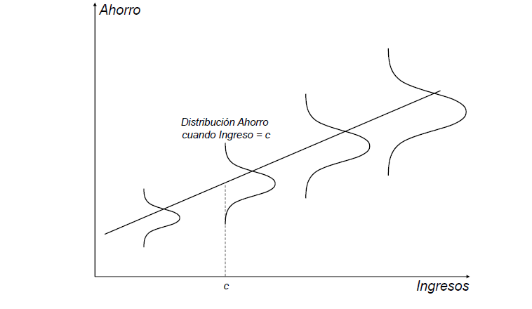
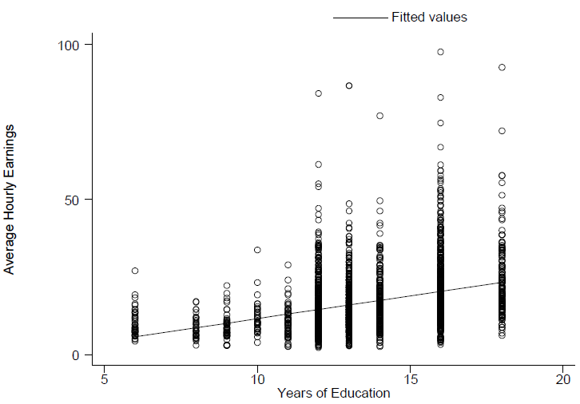
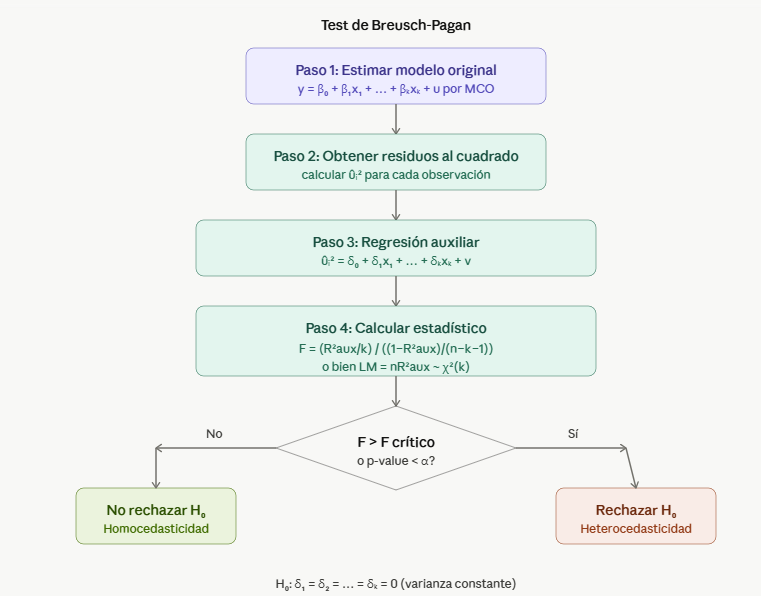
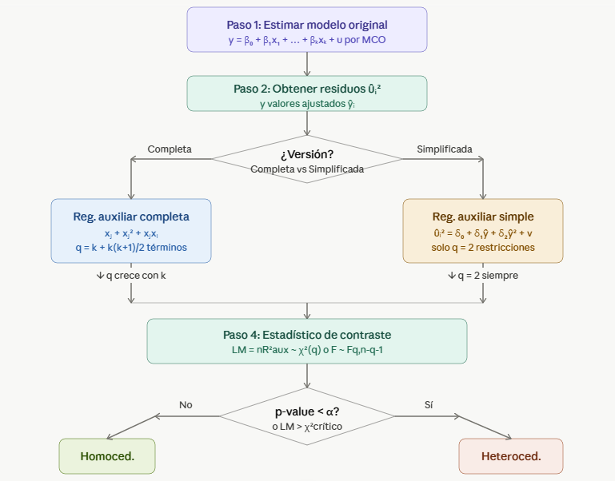
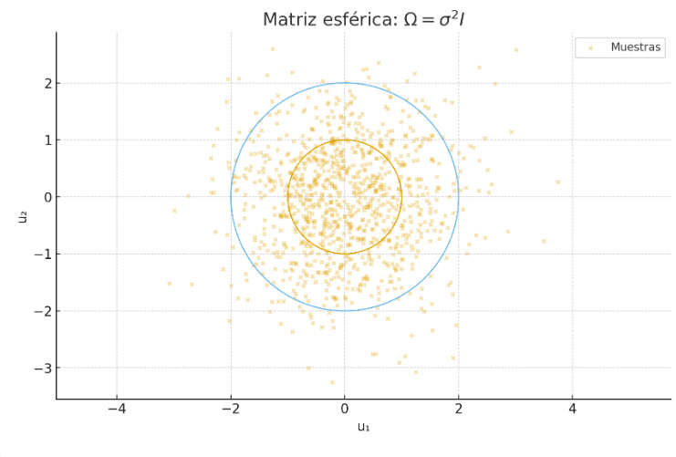
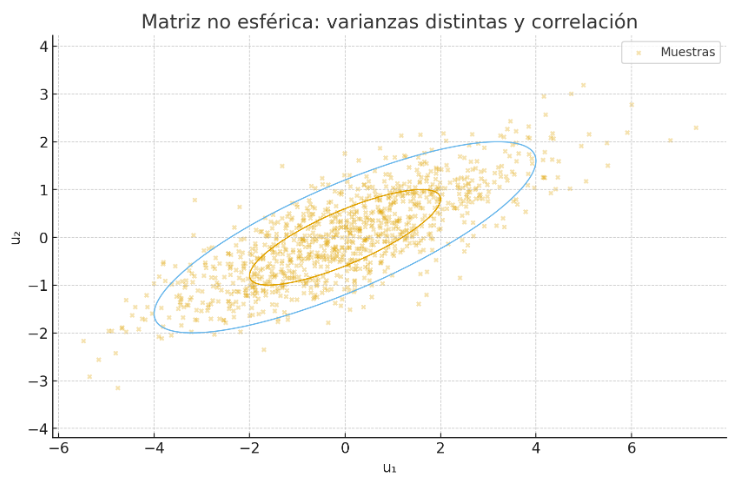
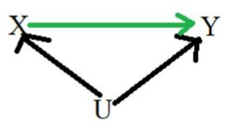
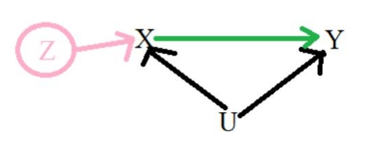
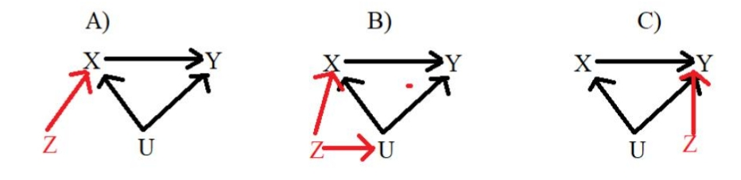

Clase 12 · Heterocedasticidad y variables instrumentales
Contenido oficial de la semana
Esta página reproduce íntegras y en orden las diapositivas de la cátedra de la semana 12:
sem12/Clase14.tex (Parte 1), sem12/varianza_estimador_heteroce.tex (Parte 2) y sem12/Clase15.tex
(Parte 3). Los ejercicios de la semana están en la 📘 Ayudantía 12.
Cómo estudiar esta página
La clase está ordenada en 5 temas. Cada tema parte con una pregunta guía, sigue con las láminas y los simuladores, y termina con ✍️ preguntas de selección múltiple (cada alternativa incorrecta explica por qué no lo es) y un 🧪 ejercicio de R que puedes editar y ejecutar aquí mismo, sin instalar nada. Los 5 ejercicios de R en un solo archivo: 📥 clase12.R.
🎯 Objetivos de la sesión
- Reconocer la heterocedasticidad y sus consecuencias para la inferencia.
- Detectarla con los tests de Breusch-Pagan y de White.
- Corregir la inferencia con errores estándar robustos de White.
- Entender la endogeneidad y estimar con variables instrumentales y MC2E.
🗓️ Agenda de la cátedra (3 horas)
La fecha se confirmará porque el viernes de la semana es feriado. Haz clic en un tema para ir directo a él.
- 18:401Heterocedasticidad y sus consecuenciasParte 1 · láminas 1–5 · ✍️ 2 preguntas · 🧪 R
- 19:052Detectarla: Breusch-Pagan y WhiteParte 1 · láminas 6–14 · ✍️ 3 preguntas · 🧪 R
- 19:353Errores estándar robustosPartes 1 y 2 · varianza y errores robustos · ✍️ 2 preguntas · 🧪 R
- 19:55☕ Receso
- 20:054Endogeneidad e instrumentosParte 3 · láminas 1–7 · ✍️ 2 preguntas · 🧪 R
- 20:405Estimación por VI y MC2EParte 3 · láminas 8–19 · ✍️ 2 preguntas · 🧪 R
- 21:15✅ Ideas clave, autoevaluación y cierre
📘 Ayudantía de la semana · se trabaja otro día, en su propia página: Ir a la Ayudantía 12 →
Heterocedasticidad
📄 Diapositivas: sem12/Clase14.tex · 19 láminas
Heterocedasticidad y sus consecuencias
¿Qué se rompe cuando la varianza del error no es constante?
Homocedasticidad vs Heterocedasticidad
Los errores \(u_i\) son heterocedásticos si la varianza condicional de \(u_i\) dado \(X_i\), \(Var[u_i|X_i]\) no es constante.

Consecuencias de la heterocedastidad
-
El estimador MCO sigue siendo insesgado y consistente, \(E[\hat{\beta}|X]=\beta\).
-
Pero el estimador de MCO no es MELI.
-
Los estimadores de las varianzas, \(Var(\hat{\beta})\), serían sesgados.
-
También, los estadísticos t no distribuirán t, ni los estadísticos F distribuirán F.
-
Estos problemas no se resuelven con tamaños de muestra grande.
Homocedasticidad vs Heterocedasticidad
| Propiedad | Homocedasticidad | Heterocedasticidad |
|---|---|---|
| Insesgadez y consistencia de \(\hat{\beta}\) | Se mantienen | Se mantienen |
| Eficiencia (MELI) | Sí | No (hay estimadores lineales más eficientes) |
| Var(\(\hat{\beta}\)) | Estimada sin sesgo | Sesgada \(\Rightarrow\) estadísticas \(t\) y \(F\) no fiables |
| Inferencia asintótica | Correcta | Las varianzas sesgadas persisten, por tanto los tests no mejoran |
Ejemplo
Considere el siguiente modelo lineal:
En este contexto, analizamos si se cumple la suposición de homocedasticidad del término de error \(u_i\). Esta condición implica que la varianza del término de error, condicional a los años de educación, sea constante:
-
Para que haya homocedasticidad, debe cumplirse que:
\[ \text{Var}[u_i \mid educacion_i] = \sigma^2 \] -
Es decir, la varianza del término de error no debe depender del número de años de educación.
-
Bajo homocedasticidad, los errores tienen varianza constante y no sistemáticamente relacionada con los niveles de educación.

✍️ Practica · Tema 1
Con heterocedasticidad, ¿qué le pasa a β̂ de MCO?
✅ Láminas 2 y 3.
¿Se resuelven los problemas de la heterocedasticidad con una muestra más grande?
✅ Lámina 2.
🧪 Practica en R · El abanico de los residuos
Simula salarios cuya varianza crece con la educación y grafica los residuos.
set.seed(31)
n <- 300
educ <- runif(n, 6, 20)
salario <- 2 + 0.8 * educ + rnorm(n, sd = 0.3 * educ) # Var(u | educ) crece
m <- lm(salario ~ educ)
plot(educ, resid(m), pch = 19, col = "steelblue", ylab = "residuo",
main = "Heterocedasticidad: el abanico se abre")
abline(h = 0, lty = 2)
🎯 Reto: cambia sd = 0.3 * educ por sd = 3. ¿Cómo cambia el gráfico?
Detectarla: Breusch-Pagan y White
¿Cómo sabemos si hay heterocedasticidad?
Test para la heterocedasticidad (Breusch-Pagan)
-
Considere el modelo MRL múltiple:
\[ y=\beta_0+\beta_1x_1+\beta_2x_2+...+\beta_kx_k+u \] -
La hipótesis nula de homocedasticidad es:
\[ H_0:E(u^2|x_1,...,x_k)=E(u^2)=\sigma^2 \] -
Se busca probar si \(u^2\) se relaciona con las variables explicativas.
-
Se puede suponer la siguiente relación:
\[ u^2=\delta_0+\delta_1x_1++...+\delta_kx_k+v \] -
Con la hipótesis nula:
\[ H_0: \delta_1=\delta_2=...=\delta_3=0 \] -
No se conocen los errores de MLR original, pero se usan los residuos \(\hat{u_i}\). Se estima:
\[ \hat{u}^2_i= \delta_0 +\delta_1x_1+...+\delta_kx_k+v \] -
Uitilizamos el test F de significancia global.
Estadístico \(F\) global (Breusch-Pagan)
Hipótesis
\(H_0\): \(\delta_1 = \dots = \delta_k = 0\) (homocedasticidad)
\(H_1\): Al menos un \(\delta_j \neq 0\) (heterocedasticidad)
Regresión auxiliar
Estadístico F
Decisión
-
Rechazar \(H_0\) si \(F > F_{1-\alpha,k, n-k-1,}\).
-
Cuanto más grande sea el valor de \(F\), mayor será la probabilidad de rechazar la hipótesis nula; es decir, de concluir que existe heterocedasticidad.
Breusch-Pagan

Estadístico global (Breusch– Pagan)
-
Las pruebas de Lagrange Multiplier (LM) constituyen una alternativa equivalente para detectar heterocedasticidad :
\[ LM = n R_{\text{aux}}^{2} \;\sim\; \chi^{2}_{(k)}. \] -
Es una alternativa asintótica al test F.
-
En R puede utilizarse la función bptest del paquete lmtest para aplicar esta prueba mediante el estadístico LM.
Test F vs test LM
| Test F | Test LM | |
|---|---|---|
| Distribución | \(F_{k, n-k-1}\) (exacta) | \(\chi^2(k)\) (asintótica) |
| Muestra pequeña | Mejor | Menos confiable |
| Muestra grande | Equivalente | |
| Fórmula | \(F = \frac{(SCR_r - SCR_{nr})/k}{SCR_{nr}/(n-k-1)}\) | \(LM = n \cdot R^2_{aux}\) |
Test de White para la heterocedasticidad
-
Extiende BP: la regresión auxiliar incluye cada regresora \(x_j\), sus cuadrados \(x_j^{2}\) y los productos cruzados \(x_jx_{\ell}\).
-
Hipótesis nula: \(\delta_1=\dots=\delta_q=0\) (homocedasticidad).
-
Estadísticos equivalentes:
\[ \text{LM}=nR_{\text{aux}}^{2}\;\sim\;\chi^{2}_{(q)},\quad F=\frac{R_{\text{aux}}^{2}/q}{(1-R_{\text{aux}}^{2})/(n-q-1)}\;\sim\;F_{q,\,n-q-1}. \] -
\(q\) crece rápidamente: \(q=k+\tfrac{k(k+1)}{2}\) si incluyes todos los términos.
Regresión auxiliar (Test de White, \(k=3\))
Sea
Paso 2 del test (regresión auxiliar):
-
Incluye: los 3 regresores originales, sus 3 cuadrados y los 3 productos cruzados.
-
Número de restricciones simultáneas: \(q =k+ \tfrac{k(k+1)}{2} = 9\).
-
Contraste global: \(LM=nR_{aux}^{2}\sim\chi^{2}_{(9)}\) o bien \(F=\dfrac{R_{aux}^{2}/9}{(1-R_{aux}^{2})/(n-9-1)} \sim F_{9,\;n-10}\).
Test de White simplificado
-
Una alternativa simplificada es emplear los valores ajustados \(\hat{y}\) (y \(\hat{y}^{2}\)) como regresores auxiliares.
\[ \hat{u}^2=\delta_0 + \delta_1\hat{y}+\delta_2\hat{y}^2+v \] -
Esto implica evaluar sólo 2 restricciones, sin importar el número de variables explicativas en el modelo original.
-
Se construye el valor
\[ LM = nR_{\hat{u}^2}^2\sim X_{2}^2 \] -
Ventajas:
-
Reduce \(q\), siendo igual a 2.
-
Sigue capturando dependencias cuadráticas de la varianza.
-
-
Desventaja: menos claro en la forma de la heterocedasticidad, cuando depende de variables específicas.
White

✍️ Practica · Tema 2
En el test de Breusch-Pagan, ¿qué variable dependiente tiene la regresión auxiliar?
✅ Lámina 6.
En el test de White con k = 3 regresores, ¿cuántas restricciones (q) hay?
✅ q = k + k(k + 1)/2 = 3 + 6 = 9 (lámina 12).
¿Cuál es el estadístico LM del test de Breusch-Pagan?
✅ Lámina 9.
🧪 Practica en R · Breusch-Pagan y White a mano
Simula errores heterocedásticos y calcula los tests de Breusch-Pagan (F y LM) y de White.
set.seed(32)
n <- 300
x1 <- runif(n, 0, 10); x2 <- rnorm(n)
y <- 1 + 0.5 * x1 + 0.3 * x2 + rnorm(n, sd = 0.2 + 0.3 * x1)
m <- lm(y ~ x1 + x2)
u2 <- resid(m)^2
# Breusch-Pagan: u² sobre las x
aux <- lm(u2 ~ x1 + x2)
R2a <- summary(aux)$r.squared; k <- 2
c(F = R2a / k / ((1 - R2a) / (n - k - 1)), p_F = pf(R2a / k / ((1 - R2a) / (n - k - 1)), k, n - k - 1, lower.tail = FALSE),
LM = n * R2a, p_LM = pchisq(n * R2a, k, lower.tail = FALSE))
# White: agrega cuadrados y productos cruzados (q = k + k(k + 1)/2 = 5)
auxW <- lm(u2 ~ x1 + x2 + I(x1^2) + I(x2^2) + I(x1 * x2))
c(LM_White = n * summary(auxW)$r.squared, critico = qchisq(0.95, 5))
🎯 Reto: cambia sd = 0.2 + 0.3 * x1 por sd = 1. ¿Se rechaza la homocedasticidad?
Errores estándar robustos
Si la varianza usual está mal, ¿cómo hacemos inferencia válida?
Varianza del estimador de MCO con heterocedasticidad
-
Considere el modelo de regresión lineal
\[ y \;=\; X\beta + u, \]donde \(y\) es el vector de \(n\) observaciones de la variable dependiente, \(X\) es la matriz de diseño \(n\times k\), \(\beta\) el vector de parámetros y \(u\) el vector de errores.
-
Suponemos heterocedasticidad: la matriz de varianzas--covarianzas de los errores no es esférica,
\[ \mathbb{E}(u u') \;=\; \Omega \quad\text{(general\, $n\times n$).} \]Si fuera homocedástica tendríamos \(\Omega = \sigma^{2} I_n\).
Estimador MCO y su descomposición
-
El término aleatorio es \((X'X)^{-1}X'u\).
-
Para evaluar la precisión de \(\hat{\beta}_{\text{MCO}}\) necesitamos su varianza condicional en presencia de \(\Omega\).
Varianza general y caso homocedástico
Varianza con heterocedasticidad
Caso particular (homocedasticidad)
Si \(\Omega = \sigma^{2} I_n\), se reduce a
Errores robustos
En la práctica trabajamos con:
Los errores estándar robustos de White son iguales a la raíz cuadrada de los elementos en la diagonal de la matriz \(\widehat{\operatorname{Var}}(\hat{\beta}_{\text{MCO}})\)
Errores robustos White
-
\[ \widehat{\text{Var}}[\hat{\beta}_j|X] = \frac{\sum_{i=1}^n \hat{r}_{ij}^2 \hat{u}_i^2}{SSR_j^2} \]
donde \(\hat{r}_{ij}^2\) es el i-ésimo residuo de la regresión de \(x_j\) sobre las otras variables independientes, y \(SSR_j^2\) es la suma residual de cuadrados de esa regresión.
-
Usando estos errores estándar robustos se puede calcular los tests de hipótesis tal como lo hacíamos antes. Por ejemplo, un estadístico \(t\) robusto a la heterocedasticidad como
\[ t = \frac{\text{estimador} - \text{valor hipotético}}{\text{error estándar robusto}} \]
Varianza del estimador MCO con heterocedasticidad
📄 Documento: sem12/varianza_estimador_heteroce.tex · 2 secciones
Varianza del estimador de MCO con heterocedasticidad
Consideremos el modelo de regresión lineal:
donde: - \(y\) es el vector de \(n\) observaciones de la variable dependiente, - \(X\) es la matriz de diseño de \(n \times k\) que incluye las variables explicativas, - \(\beta\) es el vector de \(k\) parámetros a estimar, - \(u\) es el vector de errores aleatorios de tamaño \(n\).
En este caso, suponemos que existe heterocedasticidad en los errores, lo que significa que la matriz de varianzas-covarianzas de los errores \(u\) no es esférica. En lugar de asumir homocedasticidad (\(\mathbb{E}(uu') = \sigma^2 I\)), asumimos que:
donde \(\Omega\) es una matriz de varianzas-covarianzas \(n \times n\), que refleja que las varianzas pueden cambiar entre las observaciones.
El estimador de mínimos cuadrados ordinarios (MCO) para \(\beta\) se define como:
Sustituyendo \(y = X \beta + u\) en esta expresión, obtenemos:
Al desarrollar, esto se convierte en:
Queremos encontrar la varianza de \(\hat{\beta}_{MCO}\), es decir, \(Var(\hat{\beta}_{MCO})\).
Dado que \(\hat{\beta}_{MCO} = \beta + (X'X)^{-1} X'u\), podemos escribir:
Utilizando la propiedad de que \(Var(A u) = A \, Var(u) \, A'\), tenemos:
Como hemos supuesto que \(Var(u) = \Omega\), sustituimos esto en la expresión anterior:
Si \(\Omega = \sigma^2 I\) (homocedasticidad), entonces la expresión se reduce a:
Perturbaciones esféricas y no esféricas


Comparación de perturbaciones esféricas y no esféricas.
Curvas de isoprobabilidad: Las líneas del gráfico representan curvas de isoprobabilidad (o de igual densidad) de la distribución conjunta de los errores. Cada curva une los puntos \((u_1,u_2)\) que tienen la misma probabilidad de ocurrencia bajo la distribución de los errores.
En el caso de errores normales con matriz de varianzas--covarianzas \(\Omega\), la densidad conjunta se expresa como
De esta forma, las curvas de nivel que satisfacen \(u'\Omega^{-1}u = c\) describen las regiones de igual probabilidad.
La mayor probabilidad se encuentra en el centro de la distribución, en el punto \((0,0)\), donde la densidad es máxima. Es decir, las curvas más cercanas al centro representan valores más probables, mientras que las curvas más externas corresponden a valores menos probables.
✍️ Practica · Tema 3
¿Cuál es la varianza de β̂ de MCO con heterocedasticidad general?
✅ Lámina 17.
¿Qué se usa en lugar de Ω para calcular los errores robustos de White?
✅ Lámina 18.
🧪 Practica en R · Errores robustos con matrices
Calcula los errores estándar usuales y los robustos de White con la fórmula de la lámina 18.
set.seed(33)
n <- 200
x <- runif(n, 0, 3)
y <- 1 + 2 * x + rnorm(n, sd = 0.2 + 1.2 * x^2)
m <- lm(y ~ x)
X <- model.matrix(m); u <- resid(m)
XtXi <- solve(t(X) %*% X)
V_usual <- sum(u^2) / (n - 2) * XtXi # σ̂²(X'X)⁻¹
V_robusta <- XtXi %*% t(X) %*% diag(u^2) %*% X %*% XtXi # lámina 18
cbind(se_usual = sqrt(diag(V_usual)), se_robusto = sqrt(diag(V_robusta)))
🎯 Reto: cambia el error por rnorm(n, sd = 1) (homocedástico). ¿Se parecen ahora ambos errores estándar?
Endogeneidad y variables instrumentales
📄 Diapositivas: sem12/Clase15.tex · 19 láminas
Endogeneidad e instrumentos
¿Qué hacer cuando x está correlacionada con el error?
Introducción
-
En las clases pasadas vimos que cuando omitimos una variable \(x_{2}\) que se correlaciona con \(x_{1}\), se viola el supuesto \(E\left[u \mid x_{1}\right]=0\) y nuestro estimador MCO estará sesgado.
-
Cuando esto sucede, decimos que \(x_{1}\) es endógena (está correlacionada con el error).
-
Una variable explicativa es endógena cuando su valor está parcialmente determinado dentro del sistema por relaciones que también afectan a la variable dependiente, lo que se manifiesta estadísticamente como correlación con el término de error.
-
Qué podemos hacer?
-
Método 1: variables instrumentales (IV).
-
Método 2: mínimos cuadrados en 2 etapas (MC2E).
Causas de la endogeneidad
Generalmente observamos problemas de endogeneidad en una de estas tres situaciones:
-
Variables omitidas:
- Son variables que están correlacionadas con las \(x\) (los regresores) pero no las podemos incluir por ser inobservables.
-
Simultaneidad: \(x \rightarrow y\) y \(y \rightarrow x\).
-
Error de medida en las \(x\).
Endogeneidad
El problema de la endogeneidad:

Con variable omitida.
Solución 1: Variables instrumentales
Una variable instrumental válida es una variable \(\mathbf{Z}\) que se correlaciona con \(X\), pero no con el error.

Formalmente, un instrumento es válido si cumple con dos supuestos clave:
-
Relevancia: \(\operatorname{Cov}(X, Z) \neq 0\). La variable \(Z\) afecta a \(X\). Como observamos \(Z\) y \(X\), este supuesto es testeable.
-
Exogeneidad o restricción de exclusión: \(\operatorname{Cov}(Z, U)=0\).
-
El instrumento no se correlaciona con el error.
-
\(E[Y \mid X]=E[Y \mid X, Z]\): el instrumento \(Z\) no afecta directamente a \(Y\), sólo lo hace a través de su efecto en \(X\).
-
Intuición
-
La intuición es que \(X\) tiene dos componentes: una parte exógena y una parte endógena (que está correlacionada con \(u\)).
-
El instrumento \(Z\), al no estar correlacionado con \(u\), nos permitirá utilizar solamente la parte exógena de \(X\) para identificar su efecto en \(Y\).
Buenos y malos instrumentos
-
Cuál de los siguientes \(Z\) es un buen instrumento?

-
Sólo el gráfico A muestra un instrumento válido, ya que cumple con:
1) Relevancia: \(\operatorname{Cov}(z,x) \neq 0\) y 2) Exogeneidad: \(\operatorname{Cov}(z,u)=0\). -
El caso B viola la exogeneidad porque el instrumento se correlaciona con el error (\(\operatorname{Cov}(z,u) \neq 0\)).
-
El caso C viola la relevancia. Si bien el instrumento no se correlaciona con el error, tampoco lo hace con \(X\) (\(\operatorname{Cov}(x,z)=0\)).
Ejemplos de variables endógenas e instrumentos en la literatura
-
Retornos de la educación:
\[ \log \bigl(\text{salario}\bigr)_{i}=\beta_{0}+\beta_{1} \,\text{educ}_{i}+u_{i}. \]-
\(Z\): trimestre de nacimiento (Angrist y Krueger, 1991).
-
\(Z\): proximidad geográfica a una universidad (Card, 1995).
-
-
Efecto de las instituciones en el PIB per cápita:
\[ \text{GDP}_{2015,i}=\beta_{0}+\beta_{1}\, \text{instituciones}_{2015,i}+u_{i}. \]- \(Z\): mortalidad por enfermedades en el paı́s cuando llegaron los europeos siglos atrás (Acemoglu et al., 2001).
✍️ Practica · Tema 4
¿Cuáles son las tres fuentes habituales de endogeneidad?
✅ Lámina 2.
¿Qué dos condiciones debe cumplir un instrumento válido z?
✅ Lámina 4.
🧪 Practica en R · MCO con endogeneidad
Simula retornos a la educación con la habilidad omitida y mira el sesgo de MCO aun con n = 5 000.
# Endogeneidad por variable omitida: MCO sesgado aunque n sea grande
set.seed(34)
n <- 5000
habilidad <- rnorm(n)
educ <- 12 + 2 * habilidad + rnorm(n)
lsalario <- 1 + 0.08 * educ + 0.10 * habilidad + rnorm(n, sd = 0.3)
coef(lm(lsalario ~ educ))["educ"] # verdadero: 0.08
cor(educ, 0.10 * habilidad) # educ se correlaciona con el error
🎯 Reto: cambia 2 * habilidad por 0 * habilidad en la educación. ¿Desaparece el sesgo?
Estimación por VI y MC2E
¿Cómo se usa el instrumento para estimar β?
Implementación del método IV
-
Métodos para estimar \(\hat{\beta}^{IV}\):
-
Estimación por Variables Instrumentales (VI) per se.
-
Mínimos Cuadrados en Dos Etapas (MC2E),
-
Estimación por Variables Instrumentales (VI)
-
Consideremos el modelo de regresión simple:
\[ y_{i}=\beta_{0}+\beta_{1} x_{i}+u_{i}, \quad i=1,\ldots,N. \] -
Problema: \(\operatorname{Cov}\left(u_{i},x_{i}\right) \neq 0\).
-
Contamos con un instrumento \(z\) que cumple:
-
\(\operatorname{Cov}\left(u_{i},z_{i}\right)=0\).
-
\(\operatorname{Cov}\left(x_{i},z_{i}\right)\neq 0\).
-
-
Entonces:
\[ \begin{aligned} \operatorname{Cov}\left(y_{i},z_{i}\right) &= \operatorname{Cov}\bigl(\underbrace{\beta_{0}+\beta_{1}x_{i}+u_{i}}_{y_{i}}, z_{i}\bigr) \\ &= \underbrace{\operatorname{Cov}\left(\beta_{0},z_{i}\right)}_{0} + \beta_{1}\, \operatorname{Cov}\left(x_{i},z_{i}\right) + \underbrace{\operatorname{Cov}\left(u_{i},z_{i}\right)}_{0} \\ &= \beta_{1}\, \operatorname{Cov}\left(x_{i},z_{i}\right). \end{aligned} \] -
Despejando: \(\beta_{1}=\frac{\operatorname{Cov}\left(y_{i},z_{i}\right)}{\operatorname{Cov}\left(x_{i},z_{i}\right)}.\)
Relación poblacional y análogo muestral
-
La identificación del parámetro en este contexto significa que se puede escribir \(\beta_1\) en términos de los momentos poblacionales que se pueden estimar mediante una muestra de datos.
\[ \hat{\beta}_{VI}=\frac{S_{y_{i},z_{i}}}{S_{x_{i},z_{i}}}=\frac{\sum_{i=1}^{N}(y_{i}-\bar{y})(z_{i}-\bar{z})}{\sum_{i=1}^{N}(x_{i}-\bar{x})(z_{i}-\bar{z})}. \] -
Todo esto es observable, por lo que podemos estimarlo (
Rlo hace por ustedes). -
Además, si se cumplen los supuestos sobre el instrumento \(Z\), el estimador es consistente:
\[ \hat{\beta}_{VI} \xrightarrow{p} \beta. \]
Estimación con VI en modelos de regresión múltiple
-
La estimación por IV se extiende fácilmente a modelos con múltiples regresores.
-
Nos centraremos en el caso con un único regresor endógeno y varios controles exógenos, aunque es posible tener más de una variable endógena.
Estimación por VI con una endógena y varias exógenas
-
Idea: usar las exógenas como sus propios instrumentos; la matriz \(Z\) incluirá (i) la constante; (ii) el instrumento para educ; y (iii) mujer.
-
Aplicamos la fórmula anterior:
\[ \hat{\beta}_{VI}=(Z^{T}X)^{-1}Z^{T}Y, \]donde \(Z\) es de \(N\times k+1\), \(X\) es de \(N\times k+1\), \(Y\) es de \(N\times 1\) y \(\hat{\beta}^{IV}\) de \(k+1\times 1\).
Resumen
-
Decimos que una variable es endógena cuando \(\operatorname{Cov}(u,x) \neq 0\).
-
En presencia de endogeneidad se viola uno de los supuestos de Gauss--Markov, y \(\hat{\beta}_{\text{MCO}}\) será:
-
Sesgado.
-
Inconsistente.
-
No eficiente.
-
-
Existen tres fuentes habituales de endogeneidad en economı́a:
-
Omisión de variables relevantes.
-
Simultaneidad.
-
Errores de medida.
-
-
Para estimar de manera consistente necesitaremos un instrumento.
-
Un instrumento válido es una tercera variable \(z\) que cumple:
-
Exogeneidad: \(\operatorname{Cov}(u,z)=0\).
-
Relevancia: \(\operatorname{Cov}(x,z) \neq 0\).
-
-
El método de IV permite estimar \(\beta\) de forma consistente.
Inferencia y estimación por Variables Instrumentales
-
Al igual que MCO, VI es un método de estimación
→ Un método para obtener un estimador de nuestro parámetro de interés \(\beta\)
-
Tal como con MCO, una vez obtenidas las estimaciones \(\hat{\beta}_{VI}\) queremos hacer inferencia estadística sobre las mismas. Necesitamos errores estándar.
→ Ej. pruebas t de significación de los parámetros
-
Tal como en MCO, vamos a asumir homoscedasticidad, ahora condicional en el instrumento \(z\): \(Var(u \mid z) = \sigma^2\)
-
Se puede demostrar que se puede estimar la varianza de \(\hat{\beta}_{VI}\) como:
\[ \text{Var}(\hat{\beta}_{VI}) = \frac{\hat{\sigma}^2}{\text{SST}_x R^2_{x,z}} \]donde
-
\(\hat{\sigma}^2 = \frac{1}{n-2} \sum_{i=1}^{n} \hat{u}_i^2\)
-
\(R^2_{x,z}\) es el \(R^2\) de la regresión: \(X_i = \alpha_0 + \alpha_1 Z_i + v\)
-
\(SST_x = \sum_{i=1}^{n} (x_i - \bar{x})^2\) es la suma de cuadrados total de \(X\).
-
Estimador para la varianza de las estimaciones por VI
-
Noten que:
\[ \text{Var}(\hat{\beta}_{VI}) = \frac{\hat{\sigma}^2}{\text{SST}_x R^2_{x,z}} \] -
Noto: Mientras más débil la relación entre \(x\) y su instrumento \(z\), menor \(R^2_{x,z}\)→ mayor \(Var(\hat{\beta}_{VI})\).
-
l Modelo de Regresión Simple:
\[ \text{Var}(\hat{\beta}_{MCO}) = \frac{\hat{\sigma}^2}{\text{SST}_x} \] -
Dado que \(R^2_{x,z} \leq 1\), la varianza de las estimaciones por VI será mayor o igual a la varianza de los estimadores MCO.
-
Mientras más fuerte la relación entre \(x\) y \(z\), más se acercarán las varianzas.
-
Caso extremo: \(x\) es exógena, \(x\) es el instrumento de \(x\) → \(R^2_{x,z} = 1\) → \(Var(\hat{\beta}_{VI}) = Var(\hat{\beta}_{MCO})\).
-
Estimación por mínimos cuadrados en dos etapas
-
Otro método para estimar consistentemente los parámetros con instrumentos es el Mínimos Cuadrados en 2 etapas (MC2E). El coeficiente que obtenemos será el mismo.
-
Comenzamos con el siguiente modelo donde estamos interesados en el efecto de \(x_1\) en \(y_1\):
\[ y_i = \beta_0 + \beta_1 x_{1i} \text{(endo)} + \beta_2 x_{2i} \text{(exog)} + u_i \quad \forall i = 1, \ldots, N \]Con:
(i) \(Cov(x_{1i}, u_i) \neq 0\),
(ii) \(Cov(x_{2i}, u_i) = 0\),
(iii) \(Cov(z_i, u_i) = 0\)
-
Por ejemplo:
\[ \ln(\text{salario}_i) = \beta_0 + \beta_1 \text{educ}_i + \beta_2 \text{mujer} + u_i \] -
Y podemos usar como instrumento de educ la distancia al establecimiento educativo más cercano.
MC2E - Etapa 1
Primera etapa: \(Z \rightarrow X\) Regresamos la variable endógena sobre todas las exógenas incluido el instrumento
-
Paso 1: Estimamos la siguiente ecuación por MCO.
\[ x_{1i} = \beta_0 + \beta_1 z_i + \beta_2 x_{2i} + v_i \] -
Paso 2: Obtenemos los \(\hat{\beta}\) y construimos el valor predicho de \(x_1\):
\[ \hat{x}_{1i} = \hat{\beta}_0 + \hat{\beta}_1 z_i + \hat{\beta}_2 x_{2i} \] -
Noten que \(\hat{x}_1\) es una función de \(z\) y \(x_2\) que son variables exógenas. Por lo tanto, no correlaciona con el error \((u)\). El instrumento permite quedarnos con la parte exógena de \(x\).
-
Intuición: \(x_i = \hat{x}_i + \hat{v}_i\). Solo usamos la parte exógena: \(\hat{x}_i\) y nos deshacemos de la endógena.
-
Paso 3: Noten que durante este paso, se aprovecha para testear la relevancia del instrumento. Haciendo un test de \(\hat{\beta}_1 \neq 0\).
MC2E - Etapa 2
Segunda etapa: \(\hat{x} \rightarrow y\)
-
En la ecuación original, reemplazamos la variable endógena \(x_1\) por la predicción de esta variable que obtuvimos en la primera etapa \(\hat{x}_1\) (Ec.2).
-
Nuestra ecuación original (Ec.1) la podemos escribir entonces:
\[ y_i = \beta_0 + \beta_1 \hat{x}_{1i} + \beta_2 x_{2i} + u_i \] -
\(\hat{x}_{1i}\) es exógena, ya que es una combinación lineal de variables exógenas (Ec.2).
-
Ahora, ¡podemos estimar Ec.3 por MCO!
\[ \hat{\beta}_{MC2E} = (\hat{X}^T \hat{X})^{-1} \hat{X}^T Y \] -
Con \(\hat{X} = \begin{bmatrix} 1 & \hat{x}_{1,1} & x_{2,1} \\ 1 & \hat{x}_{1,2} & x_{2,2} \\ \vdots & \vdots & \vdots \\ 1 & \hat{x}_{1,n} & x_{2,n} \\ \end{bmatrix}\)
-
El \(\hat{\beta}_1\) hallado de esta manera se conoce como \(\hat{\beta}_{1,MC2E}\).
Conclusiones
-
Vimos dos métodos para estimar consistentemente los parámetros cuando el regresor es endógeno y contamos con un instrumento válido:
-
VI
-
MC2E
-
-
En el Modelo de Regresión Simple (MRS), con un solo instrumento, ambos métodos nos darán las mismas estimaciones puntuales y los mismos errores estándar.
-
Los resultados serán distintos cuando tengamos más de un instrumento para la variable endógena.
-
Estimar por estos métodos nos asegura la consistencia de las estimaciones siempre que los instrumentos sean válidos.
-
Pero pagaremos el precio de menos precisión en esas estimaciones (errores estándar más grandes que en MCO).
✍️ Practica · Tema 5
En la regresión simple, el estimador de VI es…
✅ Láminas 9 y 10.
¿Qué pasa con la varianza de β̂_VI si el instrumento es débil (R²ₓ,z bajo)?
✅ Lámina 15.
🧪 Practica en R · VI y MC2E paso a paso
Estima los retornos a la educación con un instrumento binario por VI y por MC2E, y compáralos con MCO.
set.seed(35)
n <- 5000
habilidad <- rnorm(n)
z <- rbinom(n, 1, 0.5) # instrumento: p. ej., vivir cerca de una universidad
educ <- 12 + 2 * z + 2 * habilidad + rnorm(n) # relevancia: z afecta educ
lsalario <- 1 + 0.08 * educ + 0.10 * habilidad + rnorm(n, sd = 0.3)
b_mco <- coef(lm(lsalario ~ educ))["educ"]
b_vi <- cov(lsalario, z) / cov(educ, z) # lámina 10
# MC2E: primera etapa y segunda etapa (láminas 17 y 18)
educ_hat <- fitted(lm(educ ~ z))
b_mc2e <- coef(lm(lsalario ~ educ_hat))["educ_hat"]
c(MCO = unname(b_mco), VI = b_vi, MC2E = unname(b_mc2e)) # verdadero: 0.08
summary(lm(educ ~ z))$r.squared # R² de la primera etapa
🎯 Reto: cambia 2 * z por 0.05 * z (instrumento débil). ¿Qué pasa con el R² de la primera etapa y con la estimación?
🧠 Ideas clave
- Con heterocedasticidad, MCO sigue insesgado y consistente, pero no es MELI y los errores estándar usuales (y los tests t y F) fallan, aun con muestras grandes.
- Se detecta con Breusch-Pagan (\(\hat{u}^2\) sobre las \(x\)) o White (agrega cuadrados y productos cruzados).
- Se corrige la inferencia con errores robustos de White: \((X'X)^{-1}\big(\sum_i \hat{u}_i^2 x_i x_i'\big)(X'X)^{-1}\).
- Con endogeneidad, MCO es sesgado e inconsistente; un instrumento relevante y exógeno permite estimar con VI o MC2E, con más varianza.
✅ Autoevaluación
En una regresión con n = 200, el R² de la regresión auxiliar de Breusch-Pagan (k = 2) es 0.05. ¿Cuánto vale el LM?
✅ LM = n·R²_aux (lámina 9).
Un coeficiente tiene s.e. usual 0.10 y s.e. robusto 0.16, con β̂ = 0.25. ¿Qué concluyes al 5%?
✅ Con heterocedasticidad, hay que usar el robusto.
Un instrumento z está muy correlacionado con x, pero también con el error. ¿Qué ocurre con VI?
✅ Lámina 6, gráfico B.
📚 Para la próxima clase
- Wooldridge, capítulos 8 (heterocedasticidad) y 15 (variables instrumentales y MC2E).
- 🛠️ Esta semana es el Taller 3. Ejercicios en la Ayudantía 12.
- Próxima clase: Series de tiempo.